Анализ рельефа
1 Исходные данные
В качестве исходных данных мы воспользуемся слоем с границами двух природных заповедников: Кавказского государственного природного биосферного заповедника и Приэльбрусье.
Слой с их границами вы можете скачать по ссылке: https://disk.yandex.ru/d/tcUoFxV-mqNang
Вторым источником данных в нашем случае станет цифровая модель рельефа FABDEM.
Нужные вам для работы фрагменты цифровой модели рельефа вы можете скачать по ссылке https://disk.yandex.ru/d/Q6K-Ly-kT6jiNg
2 Цифровая модель рельефа
Цифровая модель рельефа (ЦМР) — это растровое представление непрерывной поверхности, обычно относящееся к поверхности Земли1.
Различают цифровую модель рельефа и цифровую модель местности. Разница между ними состоит в том, что цифровая модель местности включает в себя все объекты, расположенные на поверхности, тогда как цифровая модель рельефа - это только поверхность земли без растительности и строений.
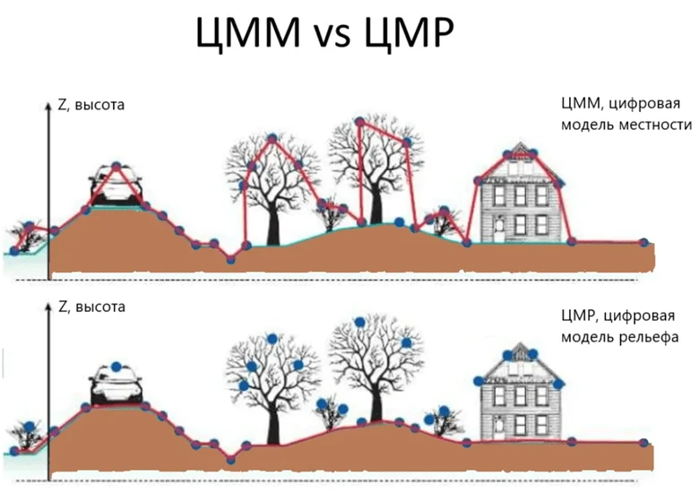
Цифровые модели рельефа, как правило, строят либо по результатам интерполяции, либо на основе открытых данных.
Самым распространенным источником данных о рельефе является цифровая модель рельефа SRTM (shuttle radar topographic mission). Эта цифровая модель была получена в 2000 году на основе спутниковой радарной съемки. Она охватывает планету между 54 градусами южной широты и 60 градусами северной широты. Подробнее на русском можно почитать про нее здесь
Скачать данные SRTM можно на сайте Геологической службы США (https://earthexplorer.usgs.gov/) или с помощью плагина SRTM downloader2.
Для использования модуля и загрузки данных напрямую из QGIS все равно необходимы реквизиты аккаунта на сайте USGS.
Значительным недостатком SRTM является ее ограниченный пространственный охват: от 54 градусов южной широты до 60 градусов северной широты, из-за которого значительная часть нашей страны не покрыта этой цифровой моделью рельефа.
Из SRTM выгружается сразу целая 1-градусная трапеция (фрагмент 1 градус по широте и 1 градус по долготе), в этом случае трапеция была обрезана до более маленького фрагмента (вообще не очень рекомендую работать с большими растрами, охватывающими сразу градус и более по долготе и широте).
Более современной и точной цифровой моделью рельефа является модель FABDEM, к тому же она действительно глобальная и охватывает всю территорию земного шара.
Немного почитать о ней на русском можно по ссылке.
Самое главное ее отличие от более ранних моделей в наличии процессинга и удалении из нее объектов, расположенных на поверхности Земли.
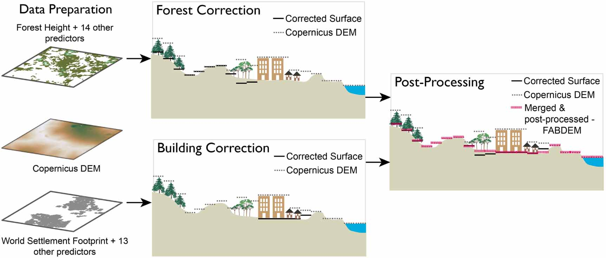
Сама модель является открытой и данные можно скачать по ссылке из репозитория - https://data.bris.ac.uk/data/dataset/s5hqmjcdj8yo2ibzi9b4ew3sn
Все данные организованы в архивы, которые включают в себя охват 10 широты на 10 градусов долготы. Растровые данные внутри архивов - это одноградусные трапеции.
Для того, чтобы понять, какой именно архив и файл из него нужен вам на исследуемую территорию, можно скачать файл FABDEM_v1-2_tiles.geojson и открыть его либо в QGIS, либо с использованием сервиса geojson.io. Прямоугольники в этом файле показывают одноградусные трапеции, а в их атрибутах указано название архива и файла.

Более современная и точная модель рельефа, основанная на ансамблевом расчете обобщенной модели с использованием распространенных открытых цифровых моделей рельефа - Global Ensemble Digital Terrain Model 30m (GEDTM30) (https://zenodo.org/records/14900181) глобальная цифровая модель рельефа (DTM) в виде двух GeoTIFF файлов оптимизированных для облачной работы (cloud GeoTIFF) общим объёмом чуть менее 39 гигабайт.
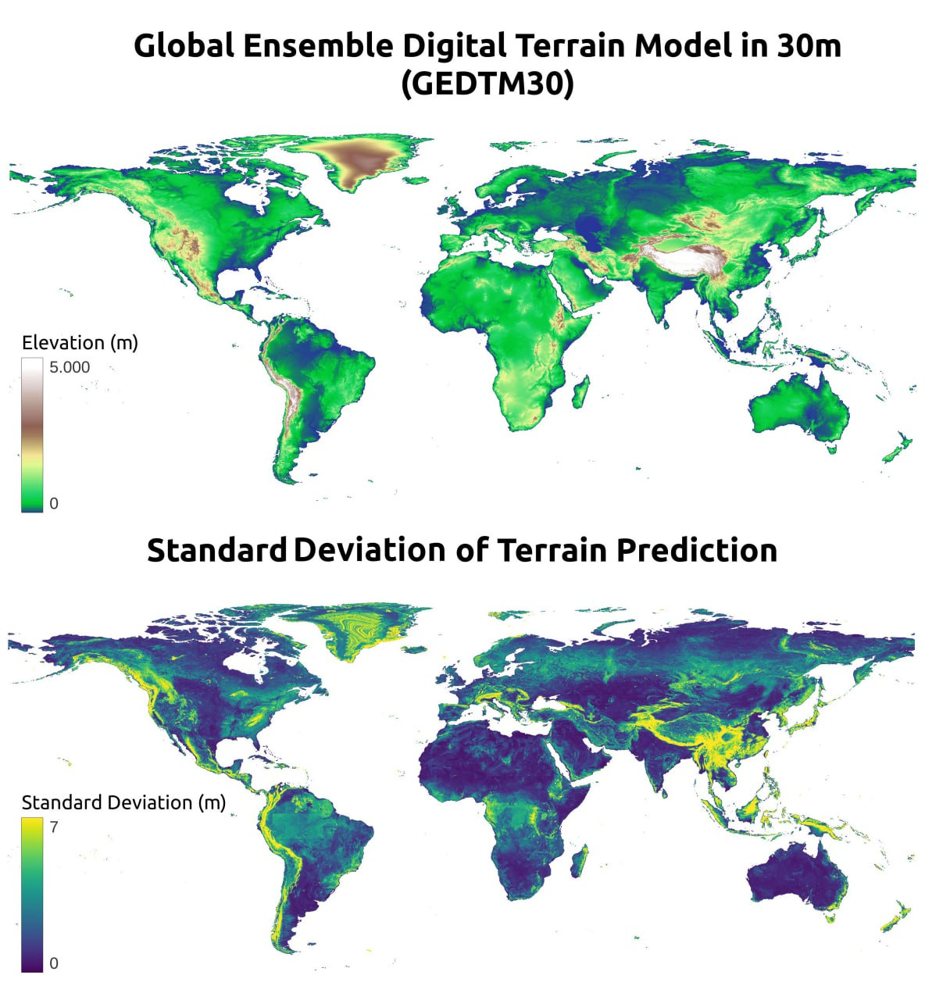
Еще одна современная недавно вышедшая цифровая модель рельефа FathomDEM: Uhe, P. et al. (2025). FathomDEM: an improved global terrain map using a hybrid vision transformer model. Environmental Research Letters, 20(3), 034002. https://doi.org/10.1088/1748-9326/ada972
Данные предоставляются бесплатно по запросу Америка (https://doi.org/10.5281/zenodo.14511570), Евразия и Африка (https://doi.org/10.5281/zenodo.14523356).
Видео инструкция по работе с данными в QGIS https://www.youtube.com/watch?v=KWwg4EmJMkk
3 Скачивание цифровой модели рельефа
Все данные организованы в архивы, которые включают в себя охват 10 широты на 10 градусов долготы. Растровые данные внутри архивов - это одноградусные трапеции.
Для того, чтобы понять, какой именно архив и файл из него нужен вам на исследуемую территорию, можно скачать файл FABDEM_v1-2_tiles.geojson и открыть его либо в QGIS, либо с использованием сервиса geojson.io. Прямоугольники в этом файле показывают одноградусные трапеции, а в их атрибутах указано название архива и файла.
Воспользуемся QGIS для поиска нужных названий нужных нам архивов и файлов.
В первую очередь откроем файл заповедники.geojson, который вы должны скачать по ссылке выше.

Далее здесь же откроем файл FABDEM_v1-2_tiles.geojson.

Каждый прямоугольник в этом файле определяет одноградусную трапецию.
Чтобы посмотреть в атрибутах этих объектов названия нужных вам архивов и файлов, вы можете просто выделить интересующие вас прямоугольники на карте, а потом открыть таблицу атрибутов и посмотреть в нее.

В атриубтивной таблице вы видите три поля/атрибута:
tile_name - имя отдельной трапеции;
file_name - название файла;
zipfile_name - название архива, в котором этот файл размещен.
Второй вариант - это воспользоваться инструментом Определить объекты  .
.
После клика на объект с использованием этого инструмента вы увидите панель, в которой показаны атрибуты объекта, на который вы кликнули.

Для создания нашей карты нам нужно скачать два архива:
N40E040-N50E050_FABDEM_V1-2
N40E030-N50E040_FABDEM_V1-2
После скачивания архивы необходимо распаковать, чтобы вы могли работать с содержащимися в них растрами.
После того, как вы определились с нужными вам архивами и файлами, слой с названиями тайлов можно убрать, он вам больше не будет нужен.
В том случае, если у вас плохо открывается слой в программе, вы можете воспользоваться сервисом geojson.io и открыть файл в нем, чтобы определить нужные вам архивы и файлы.

4 Загрузка ЦМР в QGIS
В каждой ячейке исходного растрового изображения содержится значение высоты.
Добавление растрового слоя осуществляется через строку меню Слой \(\longrightarrow\) Добавить слой \(\longrightarrow\) Добавить растровый слой.
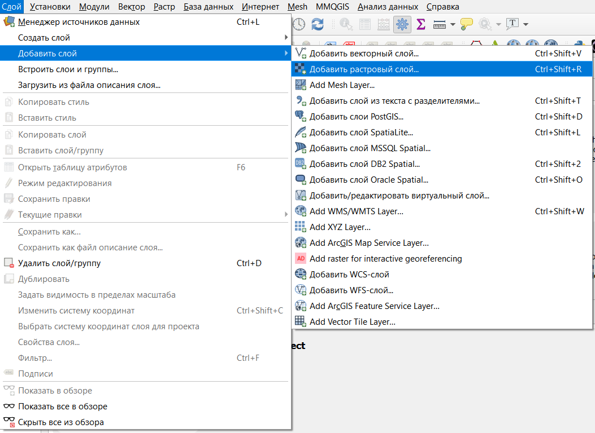
После открытия файла его лучше сразу перепроецировать на лету в EPSG:3857.
Перепроецирование на лету не будет изменять систему координат слоя, а только изменит систему координат проекта и то, как ваша карта будет отображаться на экране.
Перепроецирование на лету может быть выполнено с использованием кнопки в правом нижнем углу основного окна программы.
5 Карта теневого рельефа
Отмывка рельефа (также теневой рельеф, shaded relief) – это метод представления рельефа, при котором кажется, что на элементы рельефа сбоку падает свет3.
Для создания карты теневого рельефа воспользуемся одноградусной трапецией, которая попадает на территорию Приэльбрусья.
Откроем нужный нам растр с использованием строки меню: Слой \(\longrightarrow\) Добавить слой \(\longrightarrow\) Добавить растровый слой.
Добавленная цифровая модель рельефа будет показана в оттенках серого цвета. Темные цвета соотвествуют маленьким значениям высоты, светлые - большим.

5.1 Обрезка растра
Обрежем наш исходный растр с цифровой моделью по границам заповедника.
Для этого воспользуемся строкой меню Растр \(\longrightarrow\) Извлечение \(\longrightarrow\) Обрезать растр по маске.

В качестве маски у нас будет выступать векторный слой с границами заповедников.
Здесь обязательно необходимо указать, какой растр будет обрезаться и что будет использоваться в качестве маски, остальные параметры опциональны.
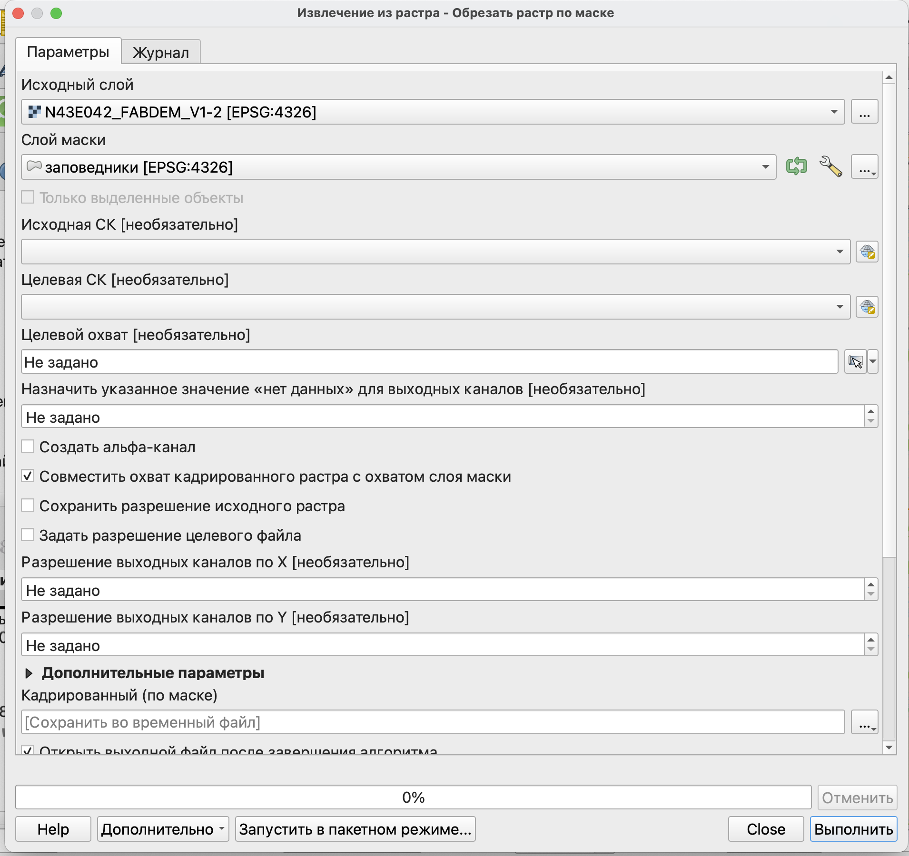
В результате мы получим растр, обрезанный по границам полигона.
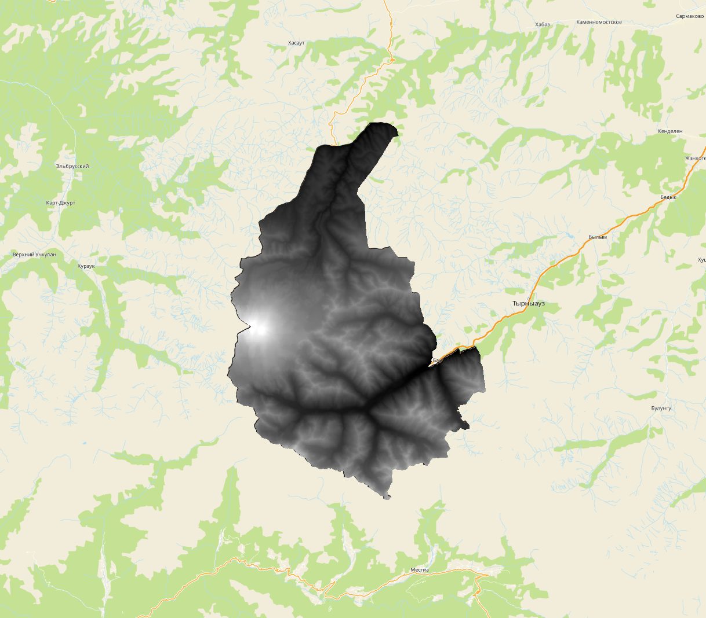
5.2 Теневой рельеф как стиль растрового слоя
Теневой рельеф может быть задан как вариант стиля для растрового слоя.
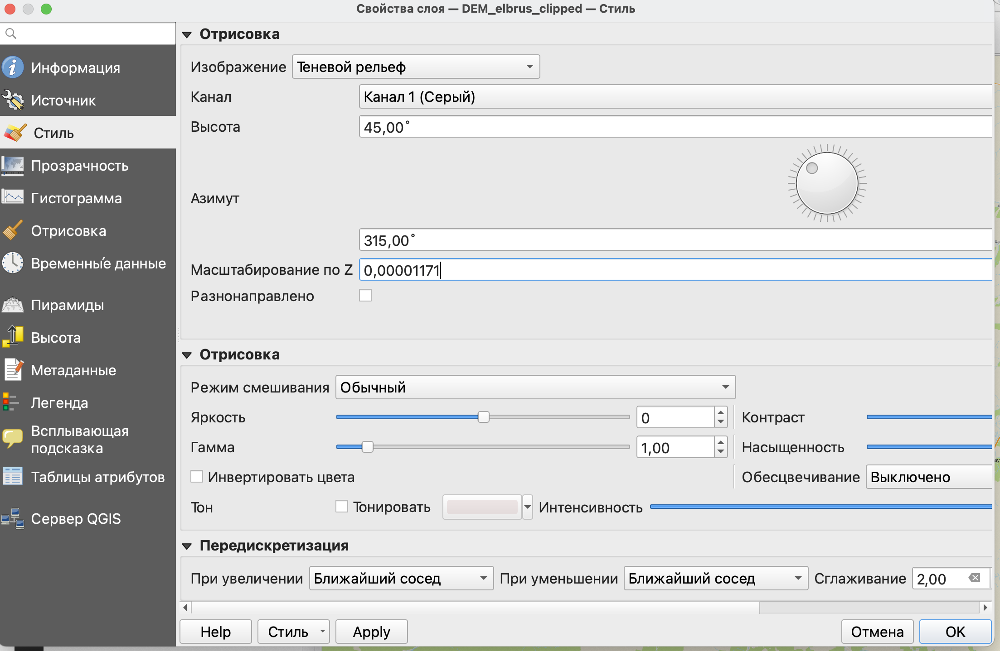
Параметры высота и азимут задают положение источника света.
В данном случае одним из самых важных параметров является Масштабирование по Z - этот параметр позволяет соотнести между собой единицы измерения плановых координат и высот. В нашем случае высоты в ячейках растра приведены в метрах, а координаты - в градусах., кроме того, стоит учитывать, что в географических системах координат искажение зависит от долготы.
С этим можно справиться двумя способами - перепроецировать растра в прямоугольную систему координат или задать масштабирование по Z (Z-factor). Фактически с помощью этого коэффициента мы переходим от градусов к метрам. Так как у нас окрестности Эльбруса, то можно воспользоваться значением коэффициента для 40 градусов долготы - 0.000011714
| Широта | Z factor (метры) |
| 0 | 0.00000898 |
| 10 | 0.00000912 |
| 20 | 0.00000956 |
| 30 | 0.00001036 |
| 40 | 0.00001171 |
| 50 | 0.00001395 |
| 60 | 0.00001792 |
| 70 | 0.00002619 |
| 80 | 0.00005156 |
В результате применения этого стиля вы увидите, что ваш рельеф стал выглядеть объемным.
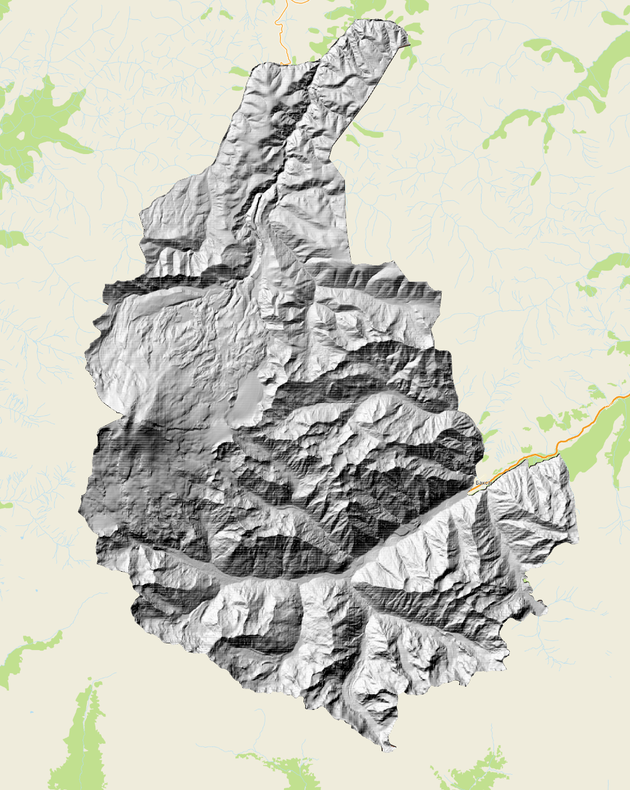
Можете попробовать поэкспериментировать с азимутом и высотой источника света.
Этот теневой рельеф можно использовать, чтобы добавить дополнительный объем подложке (предварительно нужно добавить) или исходному рельефу растра. Для этого нужно открыть свойства слоя с теневым рельефом и изменить режим смешивания на Добавление, Осветление или Затемнение (также можно поэкспериментировать с настройками яркости и контрастности).

Кроме того вы можете настроить разнонаправленные источники света для того, чтобы сделать рельеф еще более выразительным.

В случае использования теневого рельефа как стиля растрового слоя и в отсутствие перепроецирования вы увидите на карте некоторые артефакты - “рябь” на картинке.
5.3 Расчет теневого рельефа
Более стабильной опцией без артефактов будет расчет теневого рельефа как отдельного слоя.
Для этого воспользуемся инструментом из панели инструментов анализа Теневой рельеф.

Здесь необходимо указать исходный растр для расчета, коэффициент масштабирования по Z, о котором говорилось выше, и местоположение источника света.
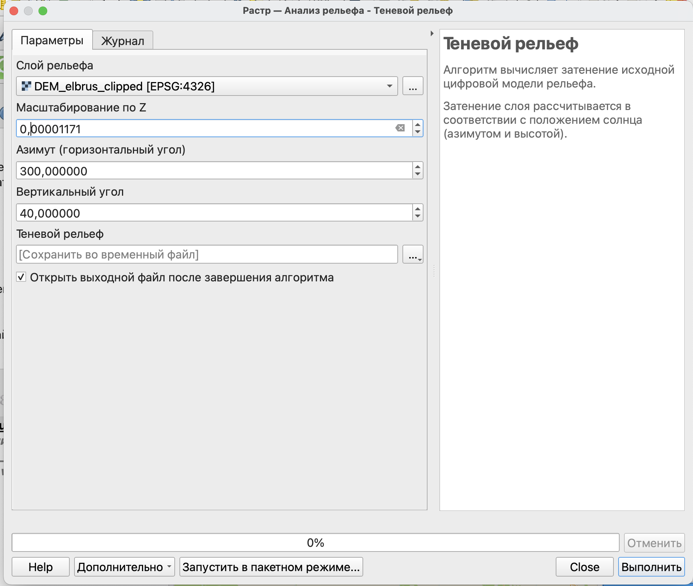
В результате вы получите новый слой, который далее можно настраивать так, как вы посчитаете нужным.

Например, можно воспользоваться режимом смешивания и комбинировать его с подложкой.
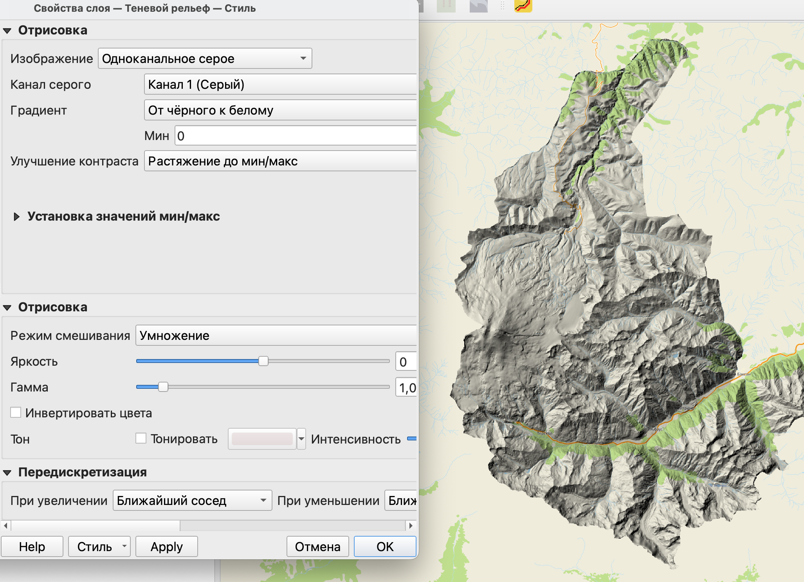
5.4 Расчет теневого рельефа с использованием модуля Terrain shading
Для еще большей выразительности рельефа можно воспользоваться модулем Terrain shading.
Чуть подробнее про его функции можно почитать в блоге разработчика.

Этот модуль после установки должен появиться у вас в панели инструментов анализа.
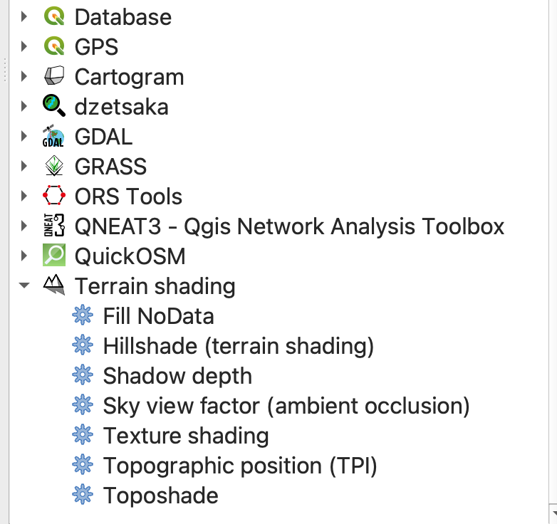
Модуль содержит сразу три функции, которые позволяют строить теневую отмывку:
- Hillshade (terrain shading) - аналогичен стандартному построению теневого рельефа;
- Shadow depth - инструмент для генерации теней;
- Toposhade - комбинация теневого рельефа и индекса топографического положения, который показывает выпуклость и вогнутость рельефа. Такая комбинация позволяет добиться более выраженной карты теневого рельефа;
- Texture shading - добавление текстуры.
Добавим отбрасываемые тени к нашему рельефу.
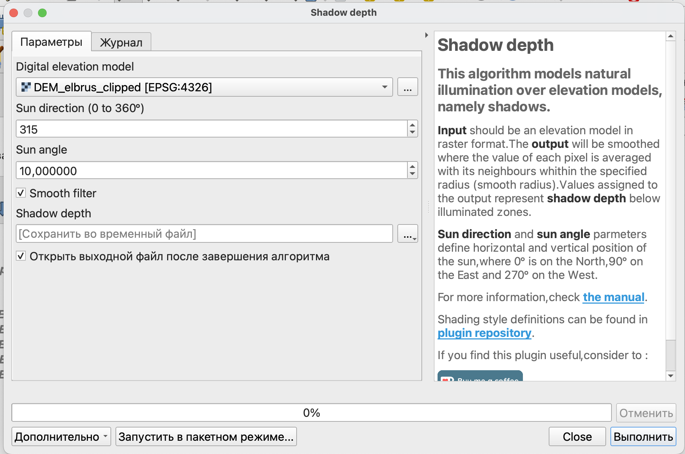
В качестве параметров здесь нам необходимо указать исходный растр и местоположение источника света (азимут и угол падения лучей).
Данный модуль рекомендует использование плоской прямоугольной системы координат с метрическими единицами измерения. Так достигается одинаковый размер ячеек растра.
Наш растр в географической системе, поэтому вы увидите предупреждение об этом, но расчет будет выполнен.
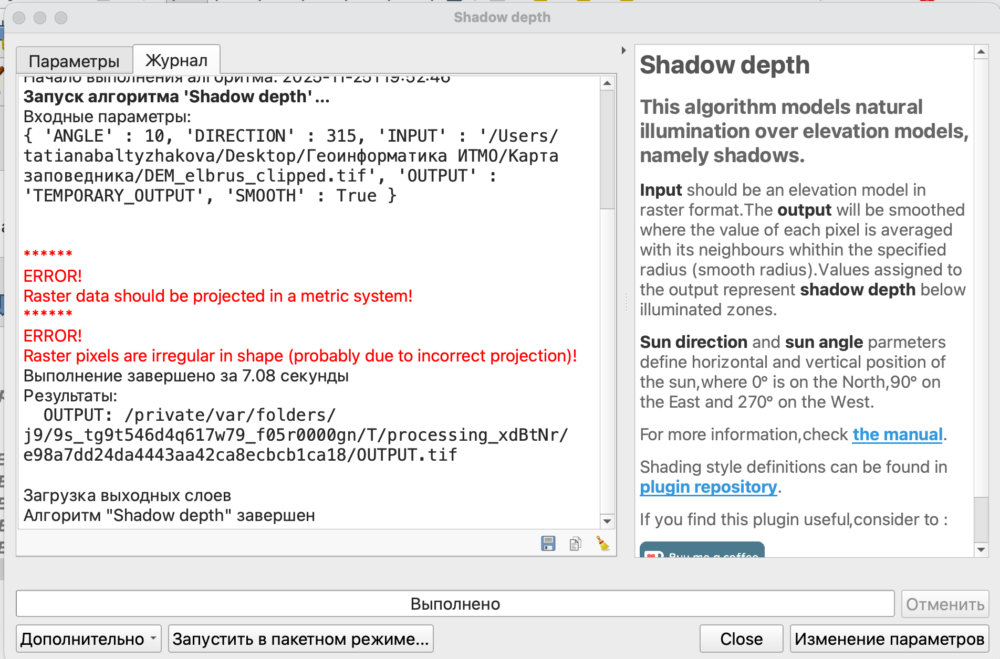
Полученный растр с тенями будет добавлен в проект.

Его вы можете использовать в комбинации с другими растрами и подложками, чтобы получить выразительный рельеф на карте.

Рассчитаем и добавим на карту текстуру.

Результат создания текстуры с подложкой показан на рисунке ниже.
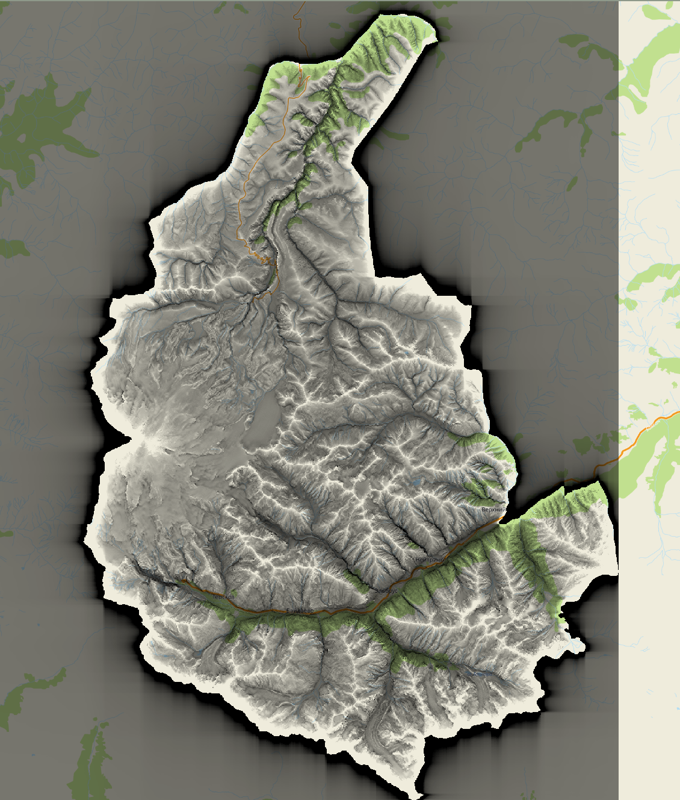
Сочетание с теневым рельефом и тенями дает достаточно драматичный эффект.
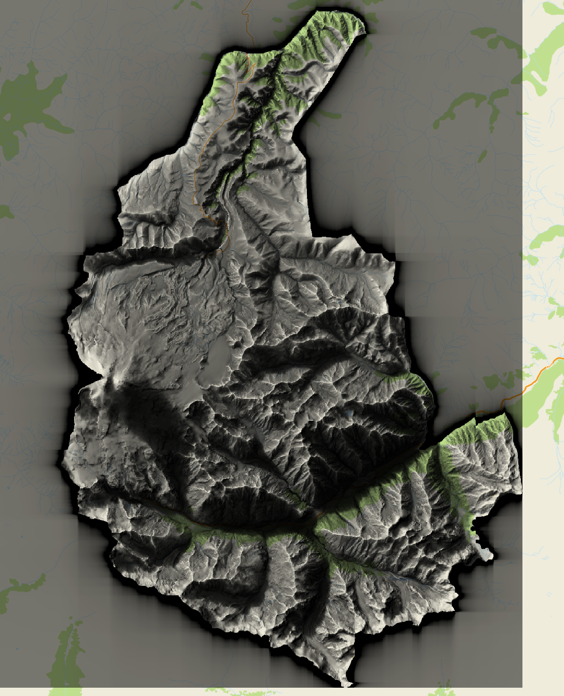
Воспользуемся инструментом, который по мнению разработчика модуля дает лучший результат, чем просто теневой рельеф - Toposhade.

Этот инструмент комбинирует расчет теневого рельеф и так называемого индекса топографического положения.
Формы рельефа определяются на основе индекса топографического положения (Topographic position index - TPI). Этот индекс позволяет классифицировать формы рельефа по высоте конкретного пикселя относительно соседей: если он ниже, то значение индекса будет отрицательным и он будет отнесен к вогнутой форме рельефа; если он выше соседей, то индекс будет больше нуля и этот пиксель будет классифицирован как выпуклая часть рельефа.
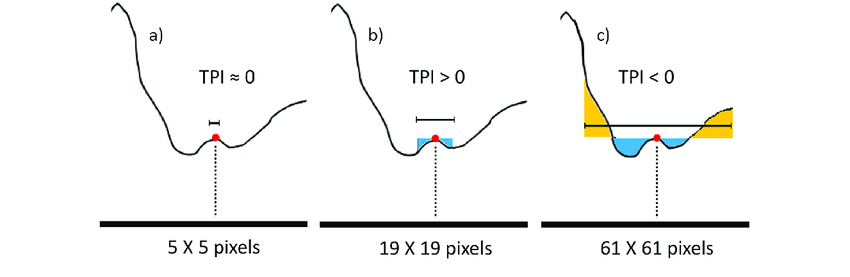

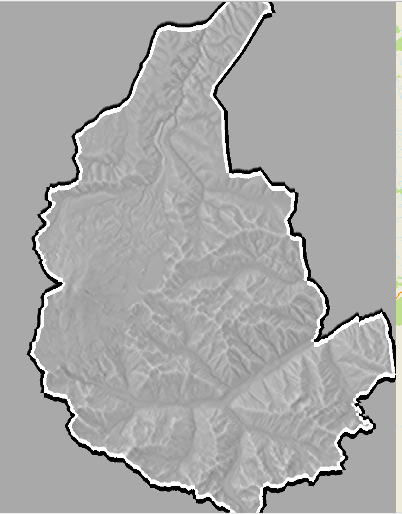
5.5 Добавление эффекта тумана5
Для того, чтобы имитировать туман, сделаем полупрозрачную заливку только небольших высот на карте.
В качестве исходной карты рельефа будет взята карта с текстурным рельефом, тенями и теневым рельефом.
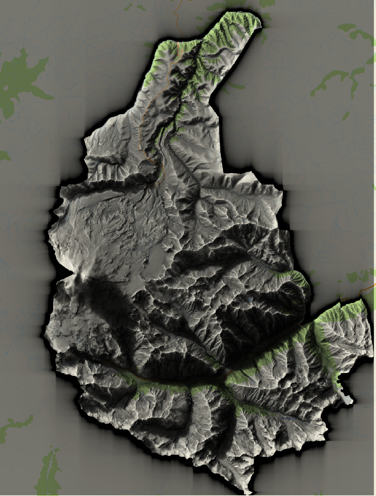
В первую очередь нужно продублировать исходный слой с цифровой моделью рельефа (можно сразу его переименовать для того, чтобы не запутаться).
В настройках стиля этого продублированного растра выберем опцию Одноканальное псевдоцветное. После чего нужно выбрать градиент (здесь подойдет любой градиент, так как мы все равно его будет редактировать).
После выбора градиента нужно открыть его редактирование (просто кликнув на полосу градиента в настройках). В градиенте необходимо оставить только начальную и конечную опорные точки, удалив все промежуточные.
Для удаления промежуточных опорных точек в градиенте нужно кликнуть на флажок под изображением градиента (это выделит нужную опорную точку), а потом нажать на клавиатуре клавишу Delete.
Для начальной точки вы можете выбрать свой цвет и установить его прозрачность на 75%, а для конечной точки нужно просто установить белый цвет с прозрачностью в 100 %.
Так как мы пытаемся добиться эффекта тумана лучше использовать серые или серо-голубые оттенки.

После применения свойств стиля ваша карта будет покрыта дымкой.

Чтобы сделать туман только в низине, можно добавить дополнительную опорную точку.
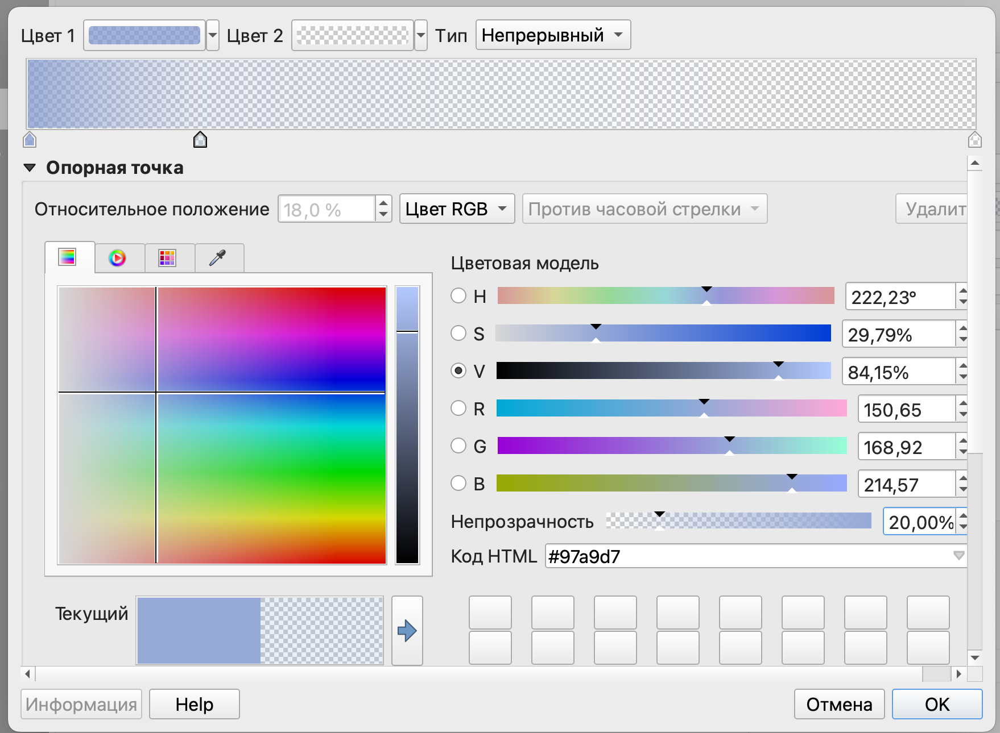
Это позволит уменьшить разброс заливки по высотам цифровой модели рельефа.
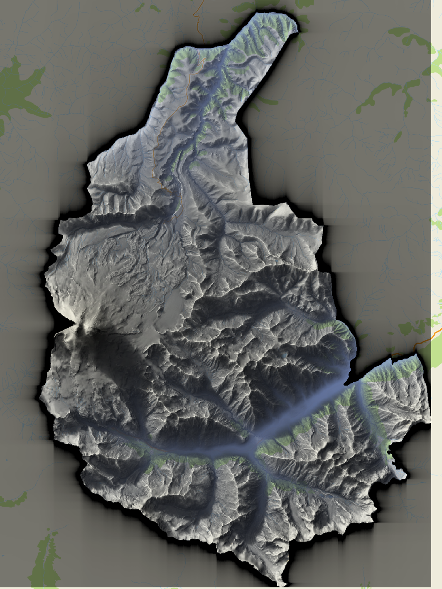
6 Карта рельефа с горизонталями
Карту рельефа с горизонталями мы построим для территории второго рассматриваемого заповедника Кавказского государственного природного биосферного заповедника.
6.1 Склеивание растров
Как видно из картинки территория заповедника попадает на несколько одноградусных трапеций сразу. Для того, чтобы нам было проще с ними работать дальше сначала мы склеим их в единый растр, а потом обрежем по границам заповедника аналогично предыдущей карте.

Откроем все нужные нам растры.
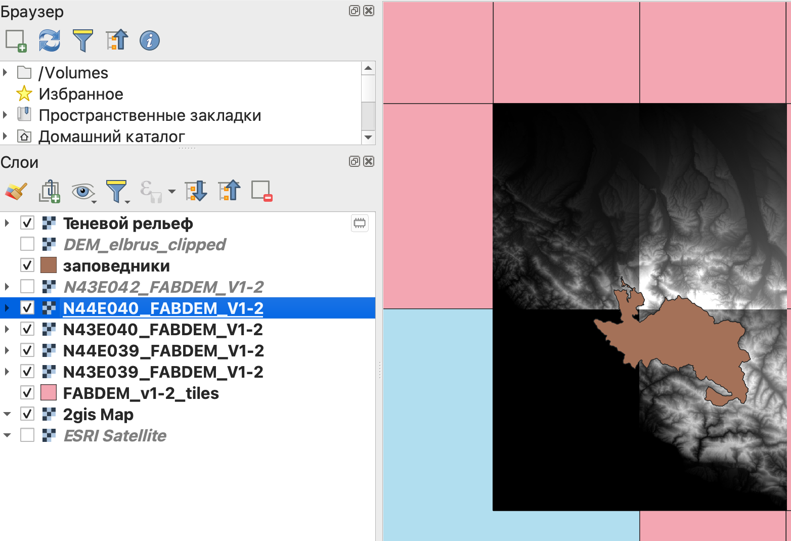
Для объединения нескольких растров в один воспользуемся инструментом слияния растров: Растр \(\longrightarrow\) Прочее \(\longrightarrow\) Создать виртуальный растр.

Особенность виртуального растра состоит в том, что он не создает привычный файл в растровом формате, а скорее собирает уже существующие растры вместе. Отчасти это похоже на проект в QGIS, в котором тоже сохраняются связи между файлами слоев.
В открывшемся окне необходимо выбрать нужные нам растры и указать место для сохранения. В нашем случае - это промежуточный этап, поэтому сохранять не обязательно.

Итоговый растр будет отображаться единым слоем на карте и в панели слоев.
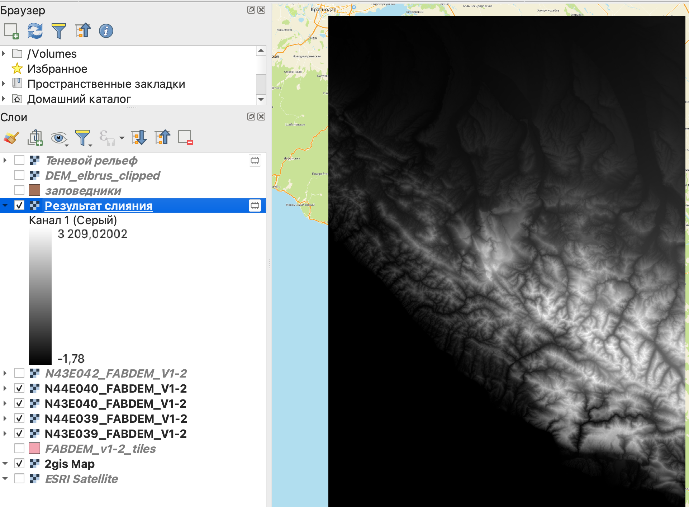
Обрежем растр аналогично предыдущему разделу.

Итогом будет обрезанное по границам заповедника цифровая модель рельефа.

6.2 Построение горизонталей и их стилизация
Для создания горизонталей воспользуемся инструментом из строки меню Растр \(\longrightarrow\) Извлечение \(\longrightarrow\) Создать изолинии.
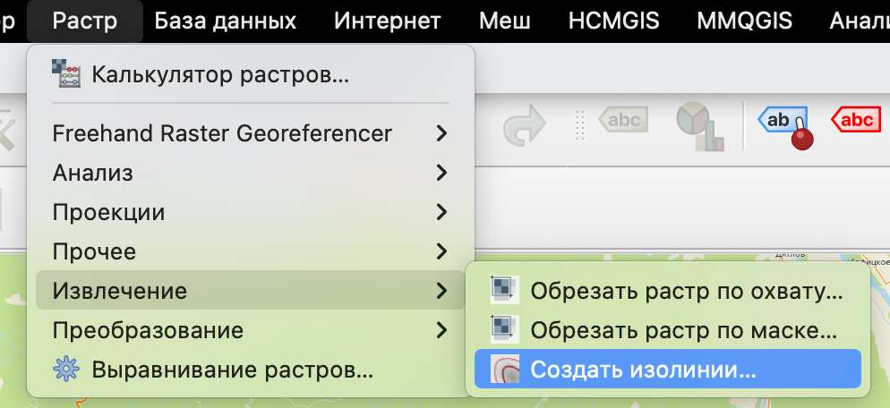
Исходным слоем выступает цифровая модель рельефа. Основной параметр - расстояние между изолиниями, то есть интервал высот между изолиниями.
Желательно подбирать этот интервал так, чтобы изолинии не были слишком часто или слишком редко.
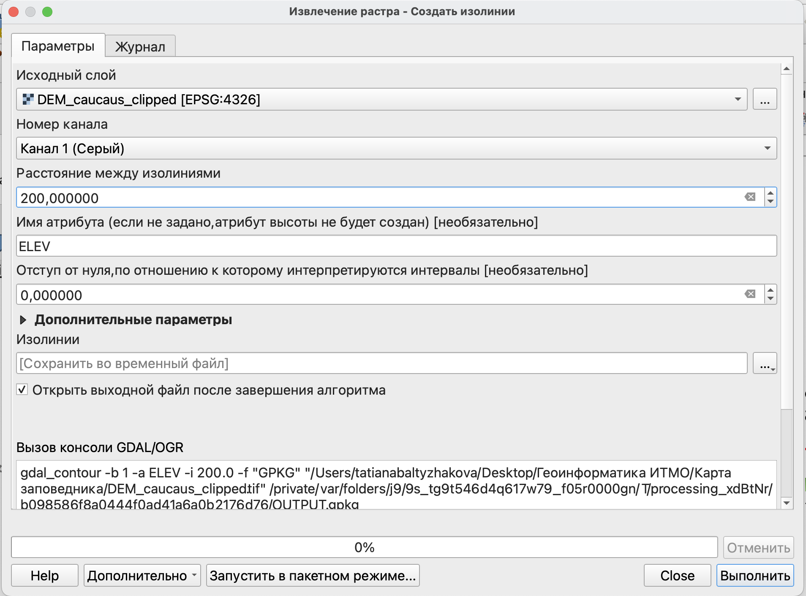
После окончания расчетов вы получите новый векторный слой с линейными объектами - изолиниями.
Основным атрибутом их будет указанный на предыдущем этапе атрибут высоты (у меня оставлен по умолчанию ELEV).

Как правило, на топографических картах утолщается каждая пятая горизонталь. В нашем случае это будут горизонтали со значением кратным 1000.
Зададим толщину линий на основе выражения.
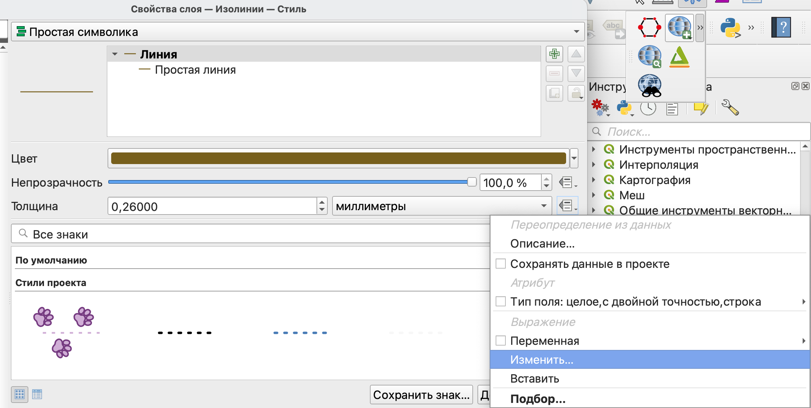
Нужное нам выражение условия:
if ("ELEV"%1000=0,1,0.3)Это стандартное условие если. В скобках указывается само условие, потом, что необходимо сделать, если условие выполнено, и что, если не выполнено.
В нашем случае условием является целочисленное деление на 1000 без остатка: то есть, если высота горизонтали кратна 1000. При выполнении условия толщина будет 1 единица, при невыполнении 0,3.

После применения условия на карте часть изолиний будет утолщена, а часть останется тонкой.
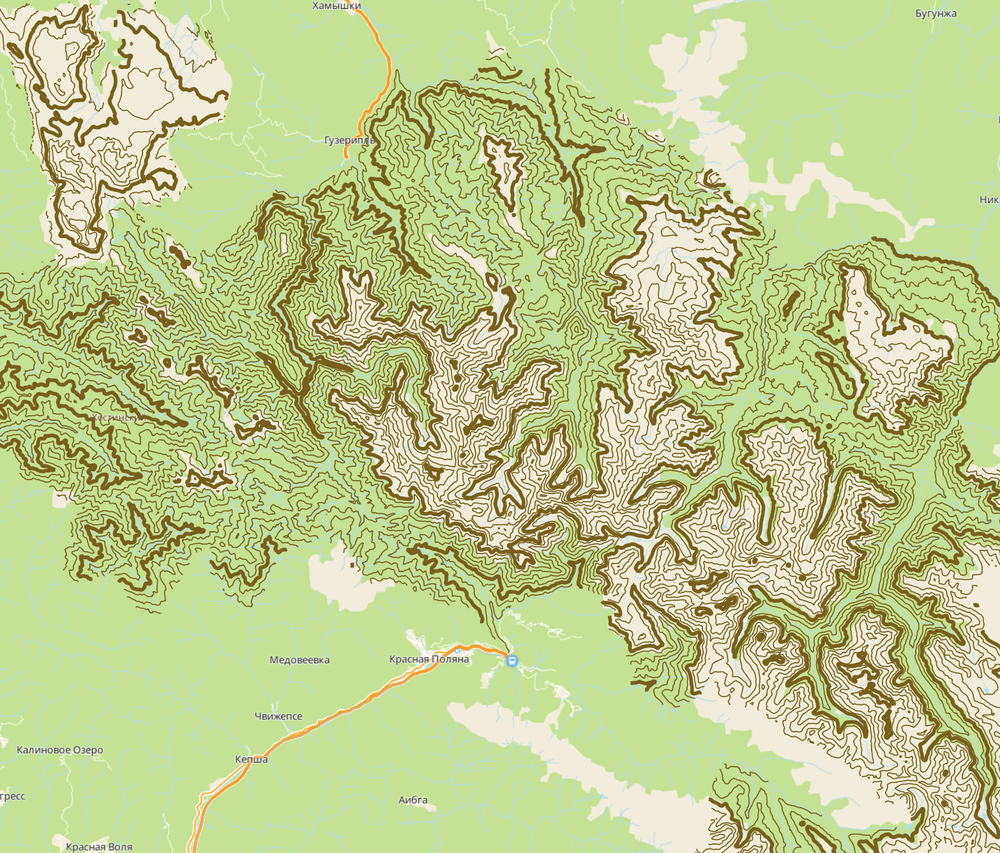
6.3 Настройка подписей горизонталей
По принятым правилам составления топографических карт:
подписывать нужно только утолщенные горизонтали;
горизонталь должна прерываться для размещения подписи;
подписи должны размещаться “головой” в сторону увеличения высоты.
Создадим подпись на основе правила, в качестве которого используем целочисленное деление, которое уже фигурировало выше в условии для утолщения линий.
"ELEV"%1000=0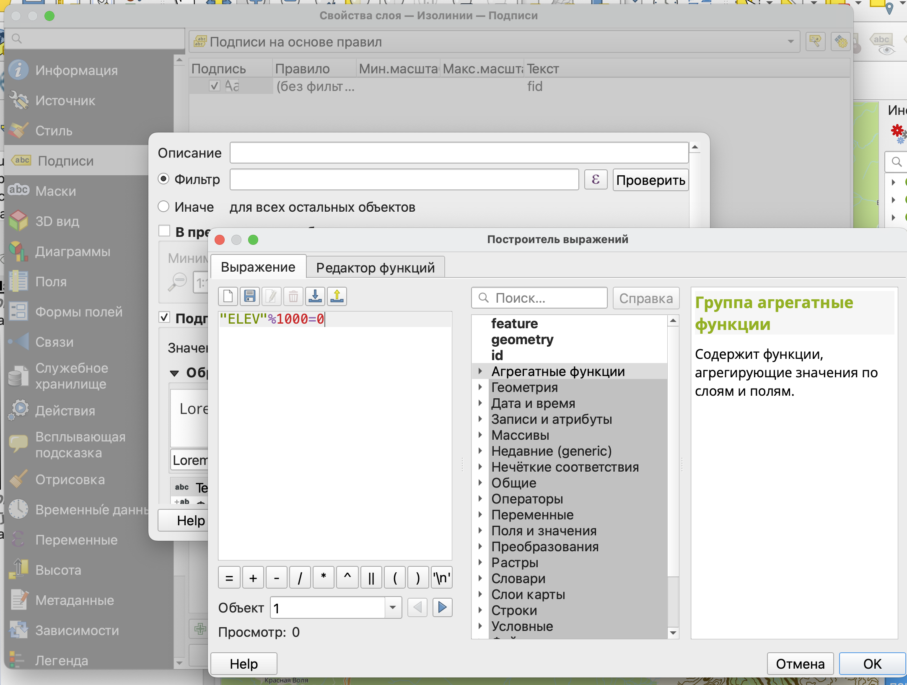
Текстом для подписи будет выступать атрибут ELEV.
Так как для подписей горизонтали должны прерываться, но мы воспользуемся уже знакомой нам опцией буфера для текста.
Чтобы подписи были размещены прямо на линии, необходимо в настройке Размещение выбрать режим “Вдоль кривых” и установить разрешенные позиции “На линии”.
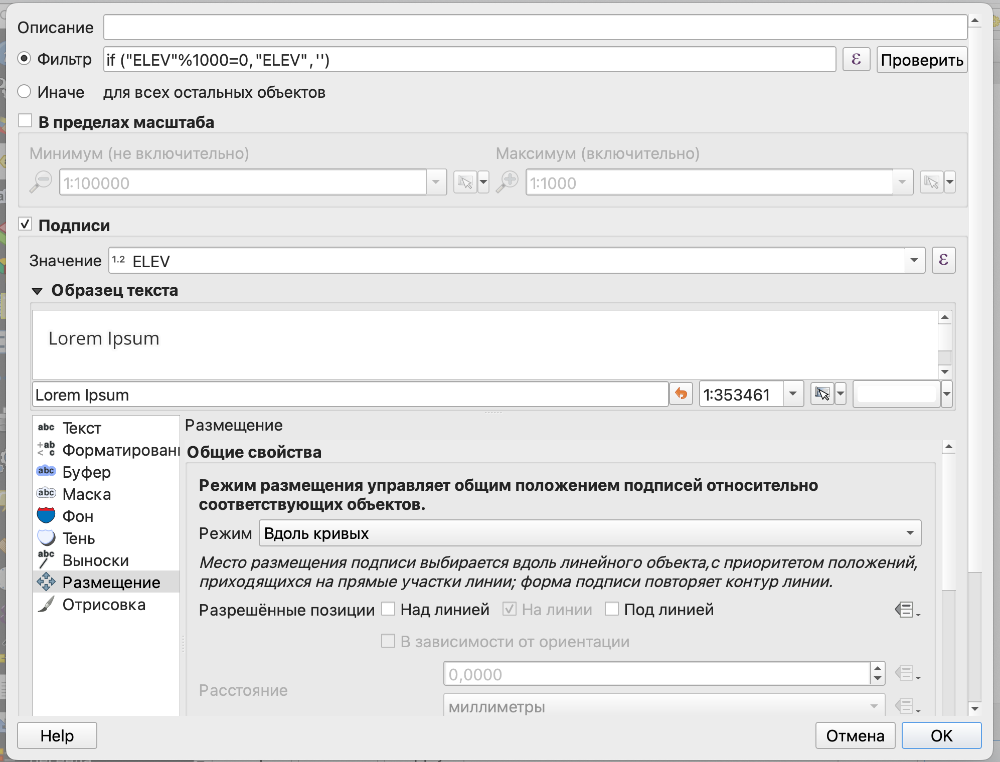
На карте вы увидите подписи только нужных вам горизонталей.
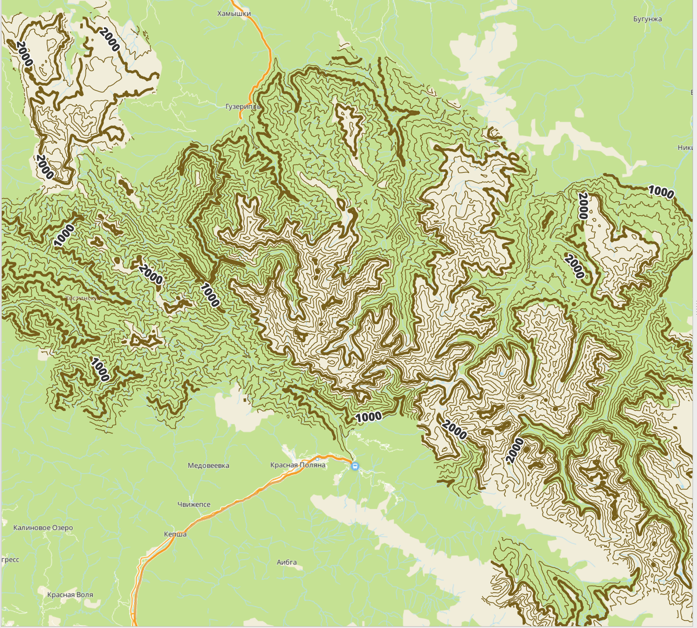
Для настройки ориентации подписей воспользуемся генератором геометрии в настройках размещения:
reverse($geometry)
Еще необходимо разрешить перевернутые подписи.
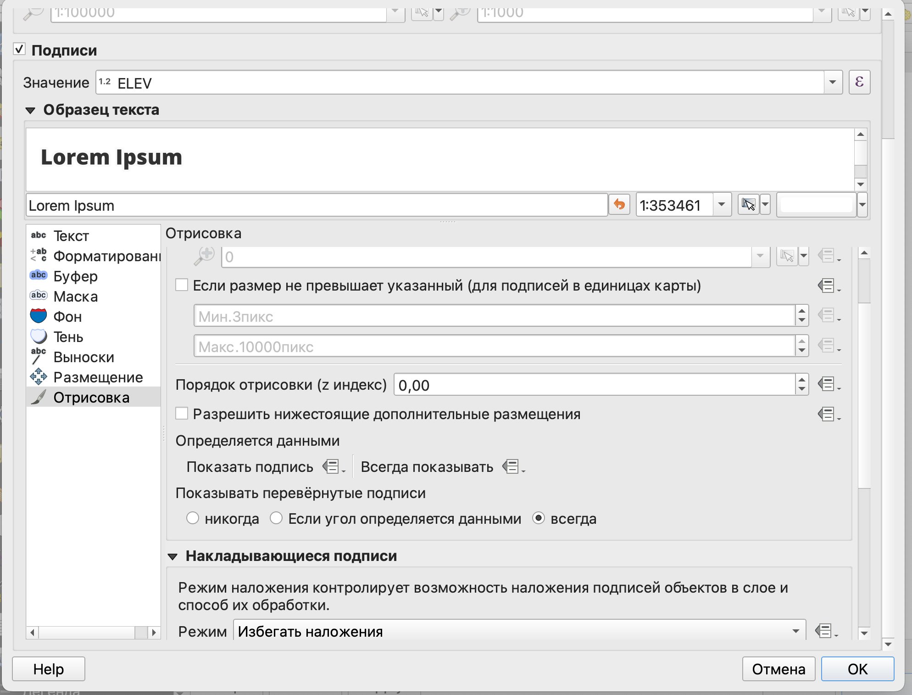
Полученные горизонтали с подписями соответствуют тому, как они должны размещаться на топографических картах.
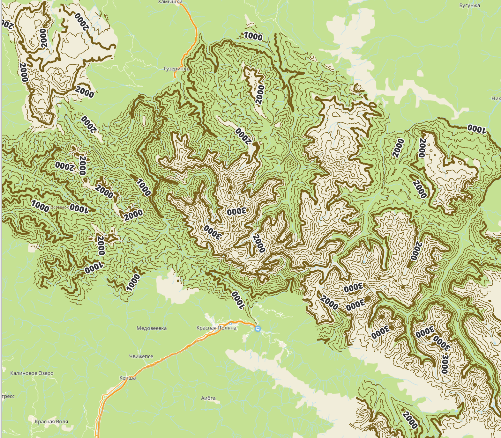
7 Построение профиля местности
При построении профиля местности рельеф рассекается вертикальной плоскостью и путем соединения точек пересечения этой плоскости и рельефа строится профиль.

Для построения профиля существует специальный инструмент Профиль высот, который можно найти в строке меню в пункте Вид.

Панель для построения профиля откроется у вас в нижней части окна. В нее должны автоматически добавиться все ваши цифровые модели рельефа.

Если нужная вам цифровая модель рельефа не появилась на панели, то вам нужно в свойствах растрового слоя указать, что он представляет высотные данные.

На панели построения профиля есть некоторые инструменты, специфичные только для нее.

Сохранить свой профиль вы можете как картинкой, так и экспортироваеть саму линию (в том числе с параметром высоты), а также сохранить таблицу со значениями высот и расстояний.

При необходимости вы можете добавить высотный профиль на макет карты при ее оформлении.
Он добавляется как любой элемент макета с вертикальной панели слева 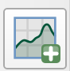.
Для того, чтобы в добавленном элементе был отображен высотный профиль, вы можете просто скопировать его из основного окна проекта.
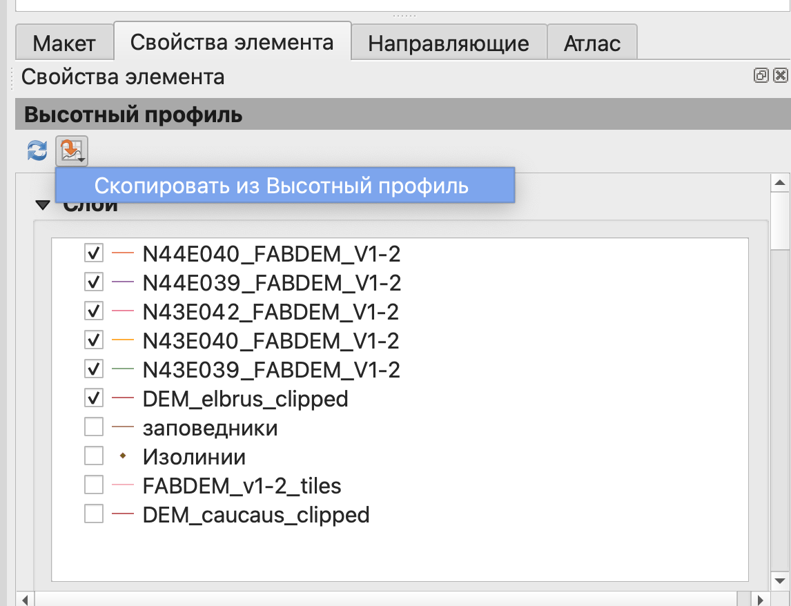
8 Построение трехмерной поверхности
Также QGIS поддреживает отображение трехмерных поверхностей. Для этого нужно просто в строке меню выбрать Вид - Новая 3D карта.

После чего в окне программы появится окно трехмерной карты (перемещение по карте левой кнопкой мыши, поворот и наклон - колесико, приближение - правая кнопка мыши).
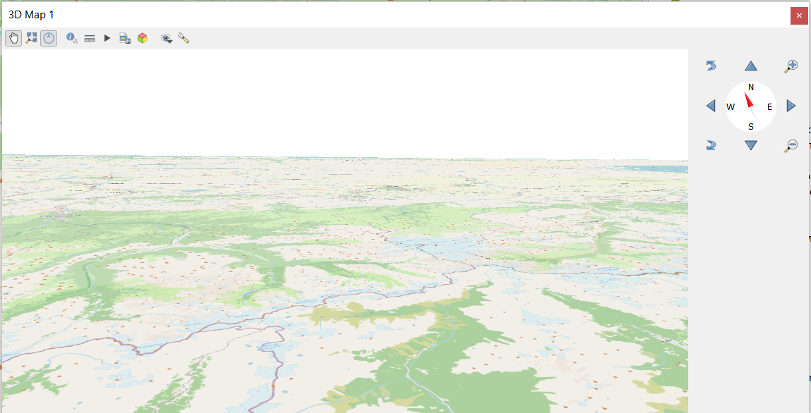
Сразу после открытия нового окна поверхность все еще является плоской, потому что не задано на основе чего строить трехмерную поверхность.
В окне трехмерной карты нужно нажать кнопку Настройки (в панели значков крайняя справа) и в открывшемся окне настроек выбрать тип DEM (raster layer), высота (растровый слой с высотами) и вертикальный масштаб (здесь лучше всзять что-то от 1 до 5, чтобы поверхность была повыразительнее).
Дополнительно можно добавить Terrain shading (фактически теневая отмывка) и подкорректировать tile resolution (чем больше, тем более подробным будет рельеф), и skirt height (если правильно нашла - высота подставки под саму поверхность).

После чего в окне будет отображена трехмерная поверхность.

9 Расчет параметров рельефа
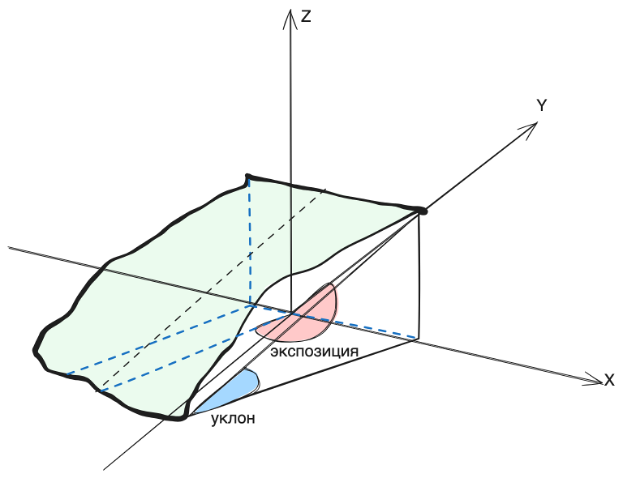
Уклон поверхности – это угол наклона в точке пересечения между горизонтальной плоскостью и плоскостью касательной к земной поверхности; фиксирует интенсивность перепада высот (градиент) между двумя заданными точками.
Экспозиция поверхности – угол по часовой стрелке между определенным направлением (как правило, на север) и проекцией уклона на горизонтальную плоскость; фиксирует направление (азимут) максимального уклона (градиента) земной поверхности6.
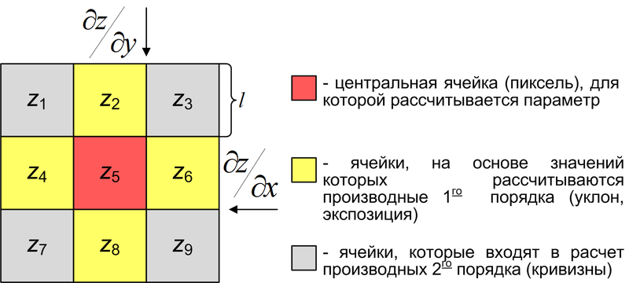
Расчет осуществляется по принципу «движущегося окна», где в центре находится целевая ячейка, для которой осуществляется расчет – z5, а значения смежных ячеек используются для вычислений.
Уклон или крутизна склона рассчитывается по формуле:
\[ \alpha = arctan(\sqrt{G^2+H^2}) \]
где \(G=\dfrac{z_6-z_4}{2l}\) - уклон по направлению восток-запад;
\(H=\dfrac{z_2-z_8}{2l}\) - уклон по направлению север-юг;
\(l\) - размер ячейки растра.
Экспозиция склона рассчитывается по формуле;
\[ \beta=180^{\circ}-arctan (\dfrac{\pm H}{\pm G}) + 90 ^{\circ}(\dfrac{\pm G}{|G|}) \]
9.1 Расчет крутизны склонов7
Рассчитаем крутизну склонов - угол наклона каждого склона в градусах.

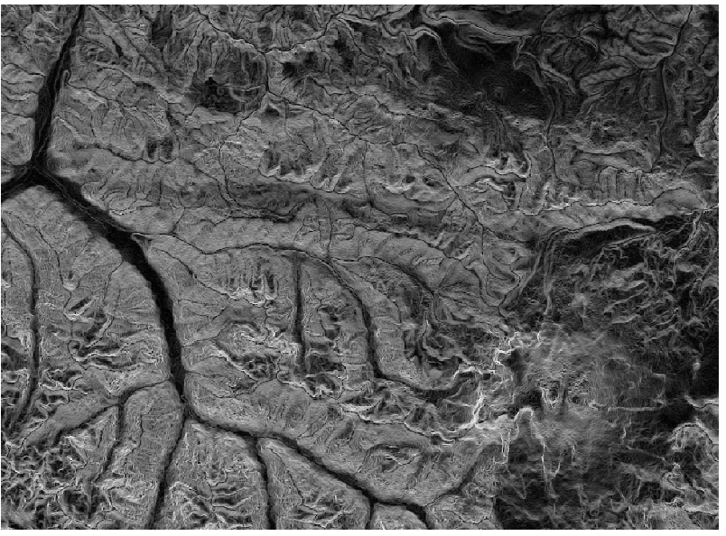
9.1.1 Выделение территорий пригодных для строительства с учетом уклона
Для того, чтобы выделить области пригодные для строительства, воспользуемся переклассификацией растра.
При переклассификации будем рассматривать территории с уклоном менее 10 %.
Так как уклон был рассчитан в градусах, а параметр пригодности для строительства задан в процентах, то пересчитаем этот параметр в градусы по формуле:
\[ Slope_{degree}=arctg(\dfrac{Slope_{percent}}{100}) \]
Полученное значение пригодности - 6 градусов.
Переклассифицируем растр и выделим области пригодные или непригодные для строительства.

Обратите внимание, что здесь в дополнительных параметрах можно указать, как именно будут задаваться границы интервалов, то есть будут ли включаться в них нижний или верхний предел интервала.

В таблице реклассификации следует ввести границы интервалов и соответствующее им значение (эти значения должны быть целочисленными.

В результате будет получен дискретный растр с двумя значениями (или с тем количеством значений классов, которое вы указали в таблице реклассификации.

9.2 Экспозиция склонов8
Эта функция позволяет определить ориентацию склонов по сторонам света.


10 Расчет высоты расположения зданий
В том случае, если необходимо рассчитать значение высот в пределах объектов векторного слоя (административных районов, например) или значение высот, на которых расположены здания, можно воспользоваться стандартным инструментом Зональная статистика.
Этот инструмент позволяет рассчитать значение какой-либо из статистик растрового слоя в пределах векторных объектов.
В качестве исходных данных была использована цифровая модель рельефа FABDEM для территории Москвы и векторный слой со зданиями, скачанными из OSM.


Доступные для расчета статистические показатели приведены на рисунке ниже. Вы можете использовать один из них или любой набор из нескольких.
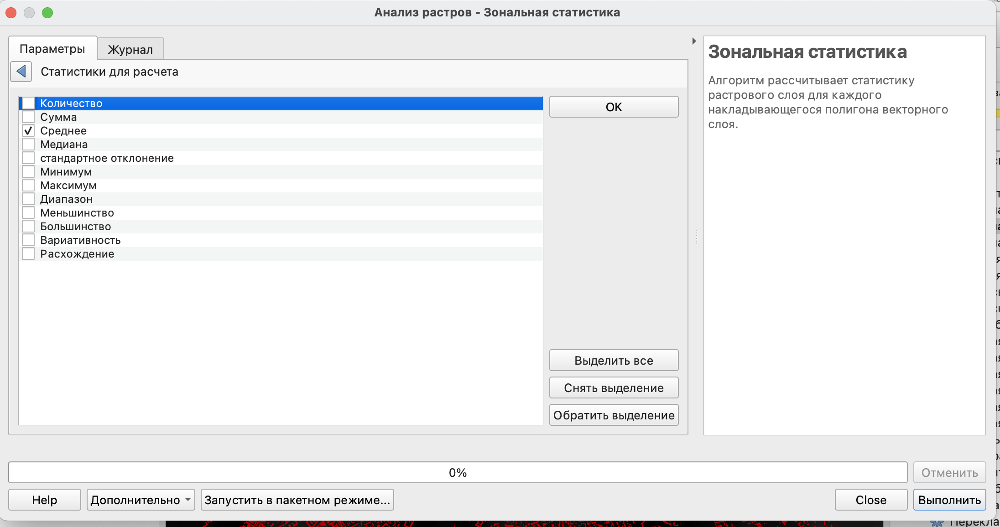
По результатам расчета вы получите векторный слой с объектами из исходного слоя, но в их атрибутивную таблицу будет добавлено новое поле с полученными значениями показателя (или несколько полей, если вы рассчитывали несколько показателей).
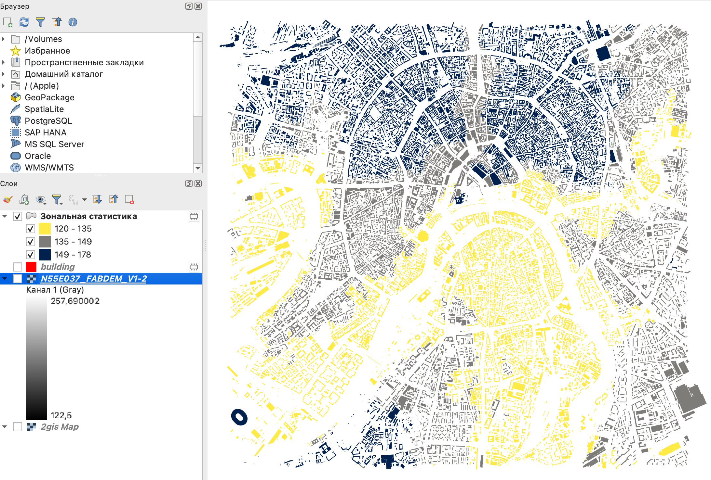
11 Построение зон видимости
Анализ видимости здесь рассмотрен на основе модуля Visibility analysis.
11.1 Индекс видимости9
Индекс видимости - это метрика, показывающая поле зрения для любой точки ланшафта.
Индекс видимости рассчитывается как отношение положительных визуальных связей: 1,0 или 100% означает, что точка видна со всех своих соседей.
В качестве исходных данных здесь задается только цифровая модель рельефа, остальные параметры устанавливаются непосредственно при расчете:
радиус анализа - насколько далеко необходимо осуществлять видимость;
высота наблюдателя, то есть высота, с которой осуществляется обзор относительно поверхности земли;
sample - количество линий обзора;
направление - расчет с точки зрения наблюдения за ландшафтом или как точек обзора.

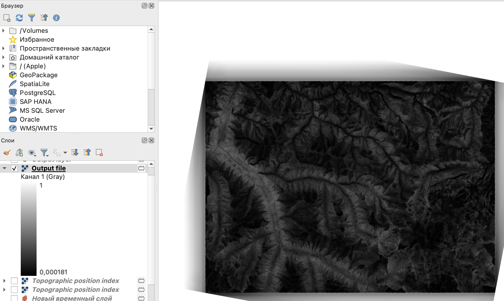
11.2 Расчет бассейнов видимости10
Результатом расчета бассейна видимости, как правило, является бинарный растр со значениями 1 (пиксель видим с точки обзора) или 0 (пиксель не виден с точки обзора).
Если точек обзора много, то их бассейны видимости будут суммироваться при наложении.
На первом этапе необходимо создать точки обзора из имеющегося точечного слоя - Create viewpoints.

В качестве исходных данных в расчет передаются точечный слой, для которого будут осуществляться расчеты, и цифровая модель рельефа.
Важно, что слой с точками обзора и цифровая модель рельефа должны быть в одной системе координат.
Обязательными параметрами являются:
радиус анализа (в метрах) - максимальное расстояние видимости;
высота наблюдателя, то есть высота, с которой ведется обзор (здесь может быть задана как высота среднего роста человека, так и высота здания, если обзор будет осуществляться с него);
целевая высота - значение высоты, которое добавляется ко всем участкам местности, проверяемым на видимость из точки наблюдателя.
В результате вы получите точечный слой из объектов, которые могут использоваться как точки обзора, так как имеют свою собственную высоту.
Далее можно рассчитать бассейны видимости с помощью инструмента Viewshed.

Инструмент позволяет рассчитать три вида бассейнов видимости:
бинарный - видно/не видно (1/0);
расположение ниже горизонта - высота, на которую должно подняться каждое место, чтобы стать видимым;
горизонт - внешний край бассейна видимости.

При использовании двух точек обзора были получены зоны видимости, показанные на рисунке ниже.

Для отображения зон видимости поверх остального рельефа можно настроить стиль полученного слоя как Палитра/Уникальные значения и сделать нулевые значения прозрачными.

В результате на карте у вас будут отображаться только те зоны, которые видны с ваших точек обзора, поверх остальных слоев.

В том случае, если у вас есть цифровая модель поверхности со всеми зданиями для исследуемой территории, можно воспользоваться модулем Visibility analysis и вот этим туториалом.
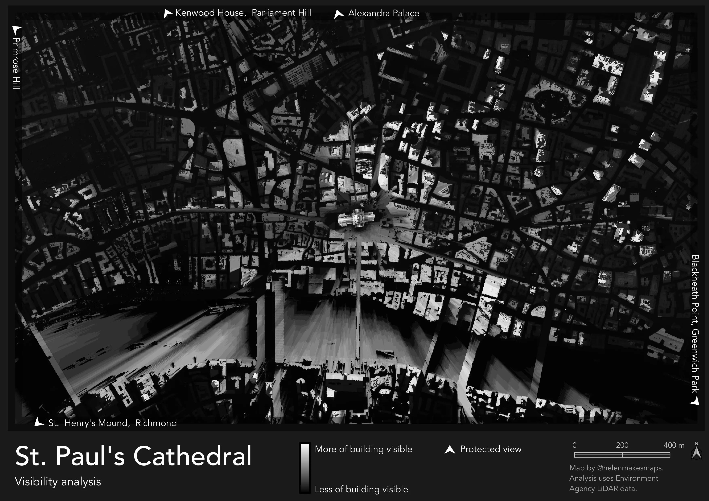
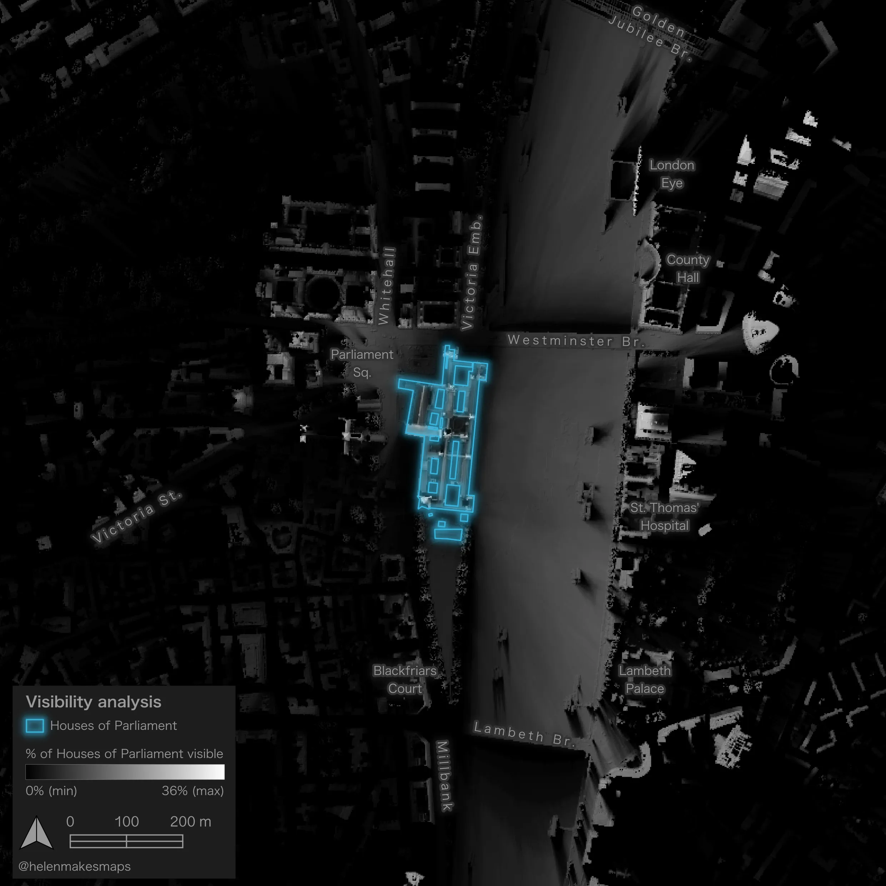
Для добавления зданий к цифровой модели рельефа можно использовать модуль UMEP.
Сноски
Что такое цифровые модели рельефа (ЦМР) - https://pro.arcgis.com/ru/pro-app/latest/tool-reference/spatial-analyst/exploring-digital-elevation-models.htm↩︎
Плагин SRTM-Downloader — загрузка SRTM с сервера прямо в QGIS https://cartetika.ru/tpost/98m7ngx971-plagin-srtm-downloader-zagruzka-srtm-s-s↩︎
Отмывка рельефа в QGIS – покажем рельеф эстетично! https://cartetika.ru/tpost/6eul4ld921-otmivka-relefa-v-qgis-pokazhem-relef-est↩︎
Setting the Z Factor parameter correctly https://www.esri.com/arcgis-blog/products/product/imagery/setting-the-z-factor-parameter-correctly↩︎
Карта рельефа с эффектом тумана в QGIS https://cartetika.ru/tpost/ncjlhkl2u1-karta-relefa-s-effektom-tumana-v-qgis↩︎
Основные геоморфометрические параметры: теория - https://gis-lab.info/qa/geomorphometric-parameters-theory.html#%D0%9E%D1%81%D0%BD%D0%BE%D0%B2%D0%BD%D1%8B%D0%B5_%D0%B3%D0%B5%D0%BE%D0%BC%D0%BE%D1%80%D1%84%D0%BE%D0%BC%D0%B5%D1%82%D1%80%D0%B8%D1%87%D0%B5%D1%81%D0%BA%D0%B8%D0%B5_%D0%BF%D0%B0%D1%80%D0%B0%D0%BC%D0%B5%D1%82%D1%80%D1%8B↩︎
Документация функции https://docs.qgis.org/3.16/en/docs/user_manual/processing_algs/qgis/rasterterrainanalysis.html?highlight=relief%20analysis#slope↩︎
Экспозиция - https://docs.qgis.org/3.16/en/docs/user_manual/processing_algs/qgis/rasterterrainanalysis.html?highlight=relief%20analysis#aspect↩︎
Visibility index (total viewshed) for QGIS : finally there! - https://landscapearchaeology.org/2020/visibility-index/↩︎
Viewshed analysis in QGIS 3: a tutorial - https://landscapearchaeology.org/2020/viewshed-tutorial/↩︎